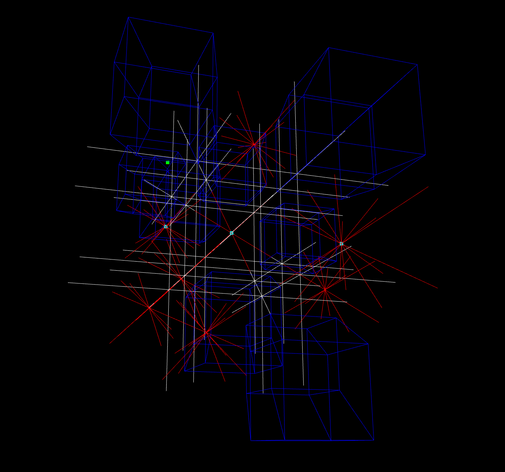

4D TicTacToe
2021-02-02

Some time ago I was chatting with my calculus instructor, the idea of 4D TicTacToe came up. I know there are some already out there but it's more fun to make one myself.
I decided to use WebGL to make this because I want to make it easy to play. I also chose Typescript to write it because I've heard people saying it's good (better than Javascript). After using it, it feels not bad. It might even be the first time I'm amazed by compiler errors. For the website script, I output it into a single AMD bundle and load it with Almond. For server it's just Node running on compiled js files. Not too fancy of a setup but I like how I don't need a hundred JavaScript bundlers just to use new syntaxes and bundles.
The most interesting part about making this project is of course he 4D part. Luckily, WebGL can already do math with 4D matrices (for doing 3D homogeneous coordinate stuff). Although translation and scaling would need additional vectors to present them, all the rotations can be represented with one matrix, which is nice.
To render a 4D board on a 2D screen, I simply projected it onto the w = 0 plane with further points appear smaller, then apply the normal 3D perspective matrix to it so at least the 3D part of the 4D board is easy to see.
I think the most fun part of 4D is its rotation. It is what tells your brain that it is not looking at a jumbled line in 3D, but a whole extra dimension. Although in addition to rotations around wx, wy, wz planes using mouse, I still kept the 3D rotations around x and y so the game doesn't become too unplayable in 4D mode. The kind of represent the movement of a 3D camera around the projected 4D object.
I also added views for "slices" of the 4D board. So you can view it as 3 slices of 3D board, or 9 slices of 2D board. These are actually pretty easy to implement. Due to the shapes I'm using for boards and pieces, I can just disable the perspective transformation and filter out which points to render by their position on the board. They certainly makes the game easier to play, but I still like playing in 4D mode to mess with my brain.
Most game logic of TicTacToe are the same across all dimensions, like one move per turn, can only place on empty block, etc. There is however the problem of checking 3 in a row in 4D. Unlike in 2D, I can't just picture a 4D grid in my head and convert the lines into indices. For one, I'm not big brain enough to think in 4D (4D is infinitely larger than 3D, which is the dimension my brain is in), plus the number of lines in 4D is way more than in the lower dimensions (I still haven't done the math yet, but something like a couple hundreds maybe). After some inspiration from PBS Infinite Series, I figured I could just loop through all the positions in the board, and get the list of axes that the block is at the end of. For example, for the block at [0, 1, 2, 1], the axes would be x and -z (x component is at the start (0), z component is at the end (2)). Once I get the list of axes, I can create a list of directions that ends in this block by calculating the power set of the axes (excluding null set). For this example, the result would be [1, 0, 0, 0], [0, 0, -1, 0], and [1, 0, -1, 0]. Calculating that in code is surprisingly easy - it's just counting in binary. After all that, I can just check the blocks along these directions and check if any of those directions contain 3 in a row. The process is not the most efficient as it would count some the lines twice, but hey it keeps the code simpler. And it's still pretty fast.
This game also has a multiplayer mode (because I'm too lazy to write a 4 dimensional AI). I simply maintain a game board object on the server side, and both players would send their inputs to, and receive board state from Websocket. Since the game of TicTacToe uses so little traffic, sending the whole game state on every update is totally doable, and very simple too.
All in all, I think 4D is my favourite dimension. It's challenging to think about it, but not too hard to calculate. And making TicTacToe in 4D certainly is very fun.
Code is on Github: Rio6/4D-TicTacToe.